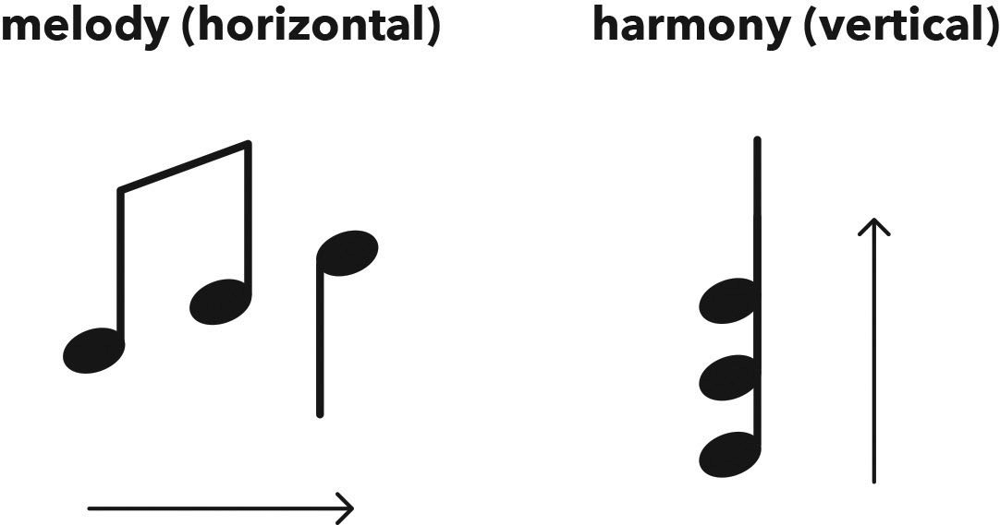
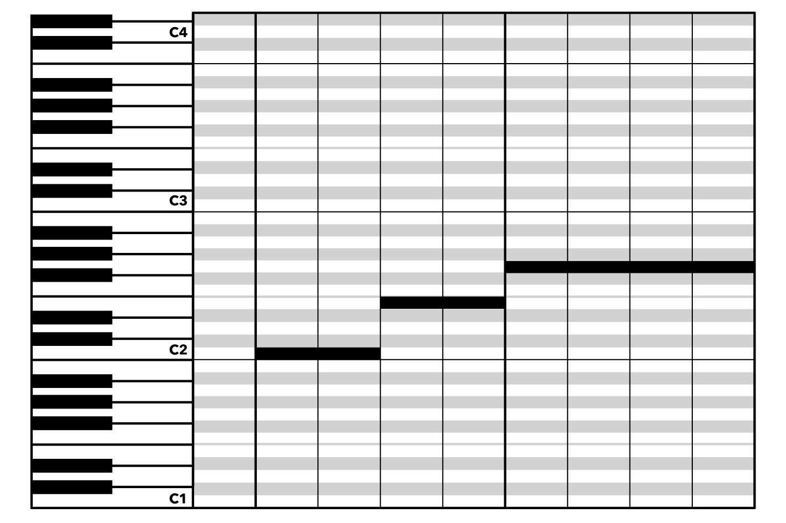
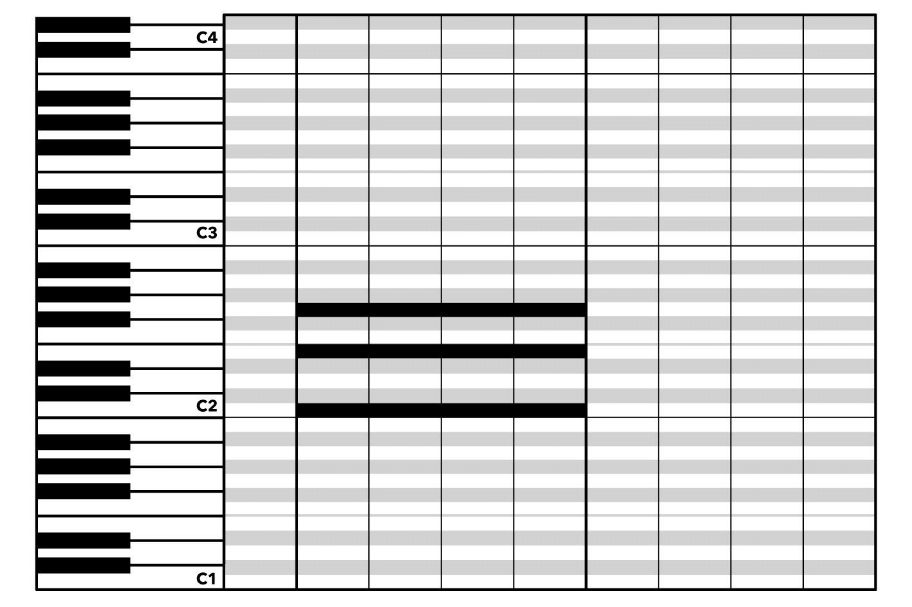

Pitch & Rhythm 音高与节奏
Hack
There are only ever two ingredients that make up all music: rhythm and pitch.
音乐中只有两个基本元素：节奏和音高。
Rhythm is a pattern in time.
节奏是时间中的一个模式。
Rhythm is independent of tempo, or the speed at which music is played.
节奏与拍速无关，也就是说，与音乐播放的速度无关。
A rhythm can be played fast, slow, or somewhere in between, but it’s all still the same rhythm.
节奏可以快、慢或介于两者之间演奏，但它始终是同一个节奏。
Pitch is the frequency of vibrations, resulting in the highness or lowness of a sound, aka a note.
音高是振动的频率，决定了声音的高低，也称为音符。
It can be expressed in melody (horizontal): a sequence of notes sounded one at a time.
它可以表现为旋律（横向）：一系列依次发出的音符。
Or in harmony (vertical): two or more notes sounded together.
或者表现为和声（纵向）：同时发出的两个或更多音符。
Or in both.
或者两者兼有。

Figure 1.1 Music notation showing the horizontal movement of an unfolding melody, versus the simultaneous vertical stacking of notes to form harmony (e.g. a chord, three or more notes sounded together).
图 1.1 音乐符号展示展开的旋律横向移动，与同时叠加的音符形成和声（例如和弦，三个或更多音符同时发声）的对比。


Figure 1.2 MIDI notation in a digital audio workstation’s piano roll, showing melody (1) versus harmony (2)
图 1.2 数字音频工作站中的钢琴卷帘 MIDI 符号，展示旋律（1）与和声（2）的对比。
Chapter
If music is a painting, then theory is the paint.
如果音乐是一幅画，那么理论就是颜料。
You can’t have one without the other.
两者缺一不可。
Paint combined with imagination creates good artwork, and theory combined with imagination creates good songs.
颜料与想象力结合能创作出优秀的艺术作品，理论与想象力结合则能创作出动听的歌曲。
Unlike in art, however, we musicians only have two ‘colours’ to work with.
然而，与艺术不同，我们音乐家只有两种“颜色”可以使用。
Every song we make, no matter how complicated, is nothing more than various shades and combinations of these two ‘colours’.
我们创作的每首歌，无论多么复杂，都不过是这两种“颜色”的不同色调和组合。
What are they? Drum roll please… pitch and rhythm!
它们是什么？请鼓掌……音高和节奏！
Rhythm 节奏
This is where it probably all began, though musicologists are still arguing over the origins of music and which came first, pitch or rhythm.
这大概是一切的起源，尽管音乐学家仍在争论音乐的起源以及音高和节奏哪个先出现。
While the precise beginnings of our art may be uncertain, what isn’t uncertain is the importance of rhythm.
虽然我们艺术的确切起源可能不确定，但节奏的重要性是毋庸置疑的。
This is the magic ingredient that gets our feet tapping and heads bopping – the element of music that literally moves us.
这是让我们不禁踏脚点头的神奇元素——音乐中真正让我们身体动起来的部分。
Rhythm has been around for thousands of years and we instinctively know what it is, but ask someone to define it and you’d think it was invented yesterday.
节奏已经存在了几千年，我们本能地知道它是什么，但如果你问某人如何定义它，你可能会觉得它是昨天才发明的。
How can something so simple be so difficult to describe?
为什么这么简单的东西却这么难描述呢？
I think it’s because rhythm is built into our DNA: our hearts start playing our inner rhythm before we’re even born and continue to play our personal soundtracks throughout our lives.
我认为这是因为节奏已经嵌入我们的 DNA：我们还未出生时，心脏就开始演奏我们的内在节奏，并在我们的一生中继续演奏我们个人的背景音乐。
Rhythm is to music what our heartbeat is to our body.
节奏对于音乐就像心跳对于身体一样重要。
It’s absolutely vital, but it’s not something we tend to think about.
它绝对必要，但我们往往不会去思考它。
This is a real shame, and often results in rhythm becoming an afterthought in music, whereas it could and should be as integral as the pitches it’s attached to.
这真是一种遗憾，往往导致节奏在音乐中成为一种附带的结果，而实际上它应该和它所附着的音高一样重要。
Finally, here is the simplest way to define the elusive term: rhythm is a pattern in time.
最后，这里是最简单的定义这个难以捉摸的术语的方法：节奏是时间中的模式。
Now go forth and play with time.
现在去玩玩时间吧。
Clap the rhythms you hear in nature or on TV and have fun creating new patterns for old songs or using old rhythmic ideas in a fresh setting.
拍打你在自然界或电视上听到的节奏，并享受为老歌创造新模式或在新鲜环境中使用旧节奏想法的乐趣。
Pitch 音高
Pitch is the element of music that’s determined by the frequency of vibrations, resulting in the highness or lowness of a sound, aka a note.
音高是音乐的元素，由振动的频率决定，产生声音的高低，也称为音符。
Pitch can be divided into melody and harmony.
音高可以分为旋律与和声。
Melody is also known as the tune, or, if you prefer a more standard definition, a sequence of notes sounded one at a time.
旋律也被称为曲调，或者，如果你更喜欢标准的定义，它是一系列依次发出的音符。
Harmony, on the other hand, is when two or more notes are sounded together; this is known as a chord when there are three or more notes sounded together.
另一方面，和声是指同时发出两个或更多音符；当三个或更多音符同时发出时，这被称为和弦。
We visualise melody as horizontal music, because it moves along one note at a time, and harmony as vertical music, because the notes are all on top of each other.
我们将旋律可视化为水平的音乐，因为它一次只移动一个音符，而和声则可视化为垂直的音乐，因为所有的音符都堆叠在一起。
I love harmony, as it’s the one-and-only aspect of music that doesn’t require time to reveal itself.
我喜欢和声，因为它是一首音乐中唯一不需要时间来揭示其全部内容的方面。
Both melody and rhythm, like stories, take seconds and minutes to unfold.
旋律和节奏，就像故事一样，需要几秒钟到几分钟的时间来展开。
Harmony is like visual art: you see it all at once and that ‘wall of sound’ can hit you with such power it’ll take your breath away.
和声就像视觉艺术：你一瞬间就能看到它，那“音墙”的力量会如此强大，让你屏息凝神。
Thankfully, though, as our late friend Bob Marley famously mused: “One good thing about music, when it hits you, you feel no pain.”
幸运的是，正如我们已故的朋友鲍勃·马利曾经沉思的那样：“音乐有一大好处：当它击中你时，你感受不到痛苦。”
So go on, sing a song to enjoy a melody or two, then get a friend to join in to savour some harmony.
所以，唱一首歌来享受一两个旋律，然后找一个朋友一起加入，品味一下和声吧。